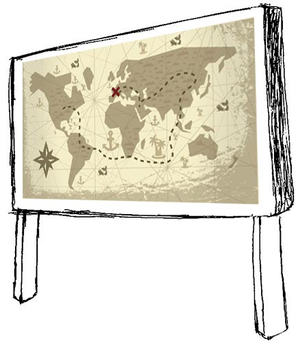
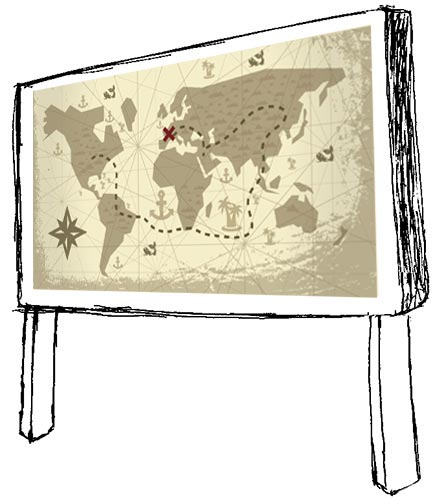

DARTS MAP


スマホからQRコードを読み込んでね。iPhoneがオススメ！
(QRコードリーダは、LINEアプリの
「友だちを探す」機能から利用することもできます。)
地図イラスト: © Freepik


スマホからQRコードを読み込んでね。iPhoneがオススメ！
(QRコードリーダは、LINEアプリの
「友だちを探す」機能から利用することもできます。)
地図イラスト: © Freepik
DARTS MAPのリモコンです。
モニターの説明を見てね。
※このブラウザは
起動したままにしておこう！